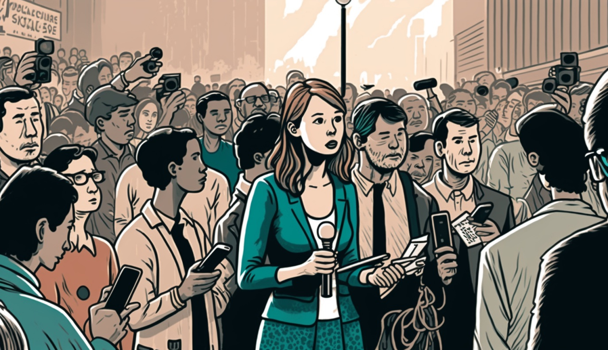

Nuestros Proyectos
Sesame Workshop
En el 2022 apoyamos a Sesame Workshop en el diagnóstico de necesidades de Hola Sésamo en Colombia, un programa pensado para prevenir los efectos del desplazamiento y la migración en el desarrollo de niñas y niños. Trabajamos en colegios oficiales de Barranquilla y Bogotá para conocer los retos que enfrentan las familias migrantes al integrarse a comunidades de acogida. También hicimos la evaluación formativa de los contenidos de Hola Sésamo, y de ¡Listos a jugar! una iniciativa que promueve la actividad física, la alimentación saludable y el bienestar emocional en la primera infancia

Origen: Red de liderazgo
Con Origen hemos tenido la oportunidad de recorrer algunos municipios de Cundinamarca, en Colombia, para medir el impacto de su programa de Liderazgo. Para Origen diseñamos e implementamos una evaluación de resultados mixta donde exploramos el cambio de narrativas y de las redes de cooperación de sus participantes.
RedPapaz
Con RedPapaz, trabajamos durante el 2020 en la Evaluación de Netsmartz, un programa educativo pensado para prevenir la explotación sexual de menores, en línea y fuera de ella. Durante el 2021 apoyamos a RedPapaz en la evaluación del mensajes de bien público sobre el impuesto saludable y el etiquetado frontal. También evaluamos los contenidos de la estrategia Familias Buena Onda, iniciativa liderada desde el Ministerio de Educación en cooperación con la OIE, Unicef y RedPapaz, para entregar contenidos en temas de cuidado, protección y educación.
Vital Strategies
Durante el 2021 en el marco de la Iniciativa Bloomberg Philanthropies para la Seguridad Vial Global, Vital Strategies desarrolló una campaña en los medios de comunicación para reducir el número de accidentes de tráfico, especialmente en motociclistas. En este proyecto nuestra misión se concentró en evaluar la recepción de la campaña en el contexto colombiano.
Nuevos Rumbos
Como evaluadores externos, trabajamos conjuntamente con el equipo de Nuevos Rumbos en Colombia y México para llevar a cabo la evaluación de procesos y resultados de IBEM, una herramienta que contribuye a la reducción de los problemas asociados al consumo de alcohol y otras sustancias psicoactivas.